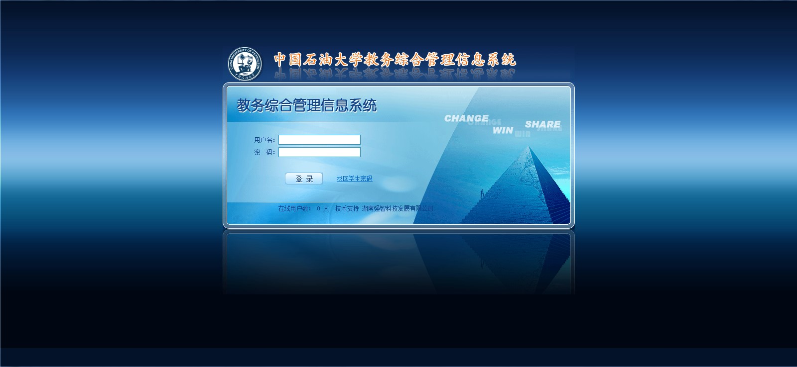

学生重学报名流程图
系统提示：

一、重学课程办理流程
——针对不及格课程重学及刷分课程
登录教务系统。如下图。
选择“成绩信息”。 如下图。
选择“07：重修报名选课”。 如下图。
对需要本学期重学的课程，选择“报名”即可。在学校规定报名时间内，可以自由报名或者取消报名。如下图。
如果在“重修报名选课”尚未出现的课程（如刷分即低修高的课程），请以班级为单位登记至学院教学办（报名选课列表见附件4），学院教学办会统一处理报名。
报名结束后，按照学院要求和收费办法统一缴费即可。登录教务管理系统,“是否报名”、“是否缴费”项均已“√”，则为该课程办理重考证成功，等待学院发放“重学证”即可。
在报名截止之前，如果尚未收到学院发放的“重考证”；并且学生系统中报名后，“是否报名”为“√”但“是否缴费”仍然为“×”，那么请务必到学院教学办公室核实情况，再次确认报名，否则视为该课程的重考证报名不成功，后果自负（包括不用交费即缴费金额为0元的课程，“是否缴费”为“√”方表示办理成功）。


提示：报名成功时，则出现下图，表示报名成功。特别提示很重要，请认真阅读并执行。
备注：登记“重修报名选课”尚未出现的课程时，请务必确认该课程本学期确实有开课，以免浪费第一次免费重学的机会或者你的现金！、报名后不参加考试者，一律按照“0”分，缺考记录。
特别提示：办理重学证后，务必尽快联系任课老师，确认上课及结课考试相关事宜。否则，后果自负。
二、听课证课程办理手续
——针对因转专业、降级等教学计划变更、缓考等原因需要在本学期参加开课课程的学习和结课考试的课程，以及提前修读、旁听外专业必修和限选课程
同上，登录系统。
选择“听课报名”。 如下图。
查找需要听课的课程，在红色区域输入课程名称，并点击“报名”。 如下图。
点击“报名”后，出现“听课类别”对话框，如下图，请如实选择即可，。一般有“转专业补学”、“降级补学”、“缓考补学”、“提前修读”、“辅修”及“其他”。请正确选择类别！
选择“送审”。 如下图。
选择“送审”后，提示如下图。如下图。
点击确认后，如下图
报名结束后，按照学院要求和收费办法统一缴费即可完成报名手续。登录教务管理系统，如显示“审核通过”字样，且“是否报名”、“是否缴费”项均已“√”，则为该课程办理听课证成功，等待学院发放“听课证”即可。如下图。
在报名截止之前，如果尚未收到学院发放的“听课证”；并且学生系统中报名后，“是否报名”为“√”但“是否缴费”仍然为“×”，那么请务必到学院教学办公室核实情况，再次确认报名，否则视为该课程的听课证报名不成功，后果自负（包括不用交费即缴费金额为0元的课程，“是否缴费”为“√”方表示办理成功）。
提示：报名成功时，或许你会遇到如下对话框。如下图。
如果上图选择“确定”，则出现下图，表示报名成功。特别提示很重要，请认真阅读并执行。
特别提示：办理听课证后，务必尽快联系任课老师，确认上课及结课考试相关事宜。否则，后果自负。